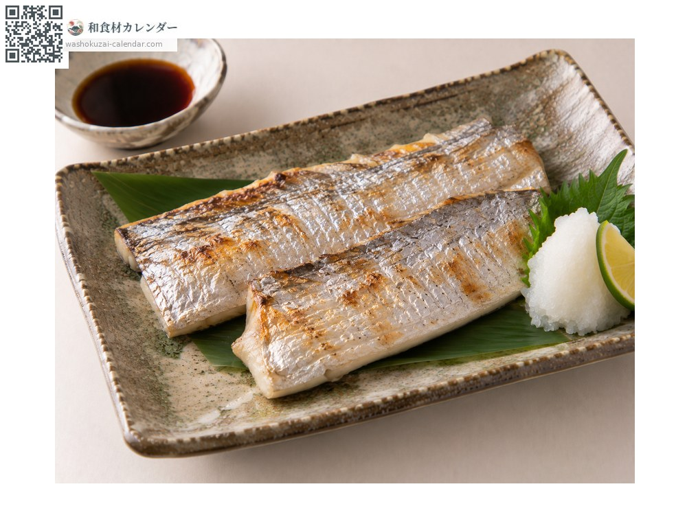
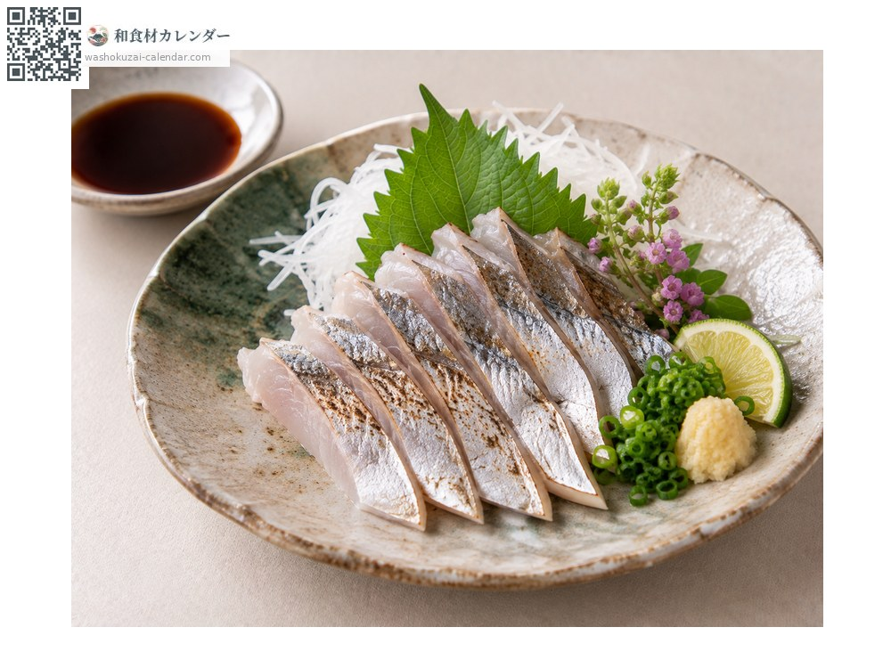
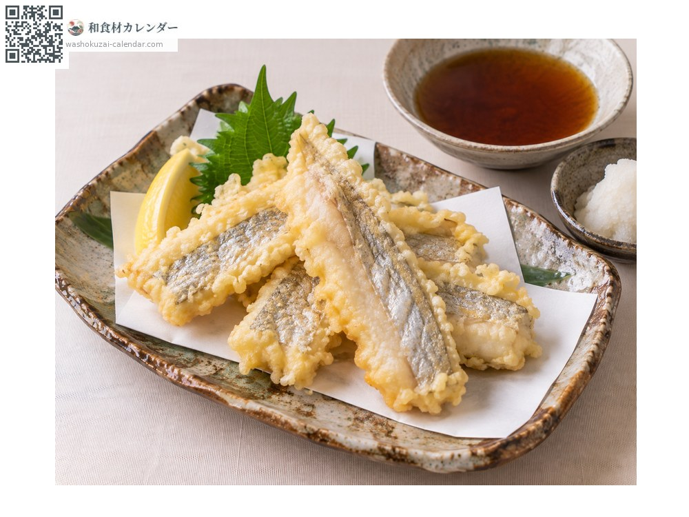
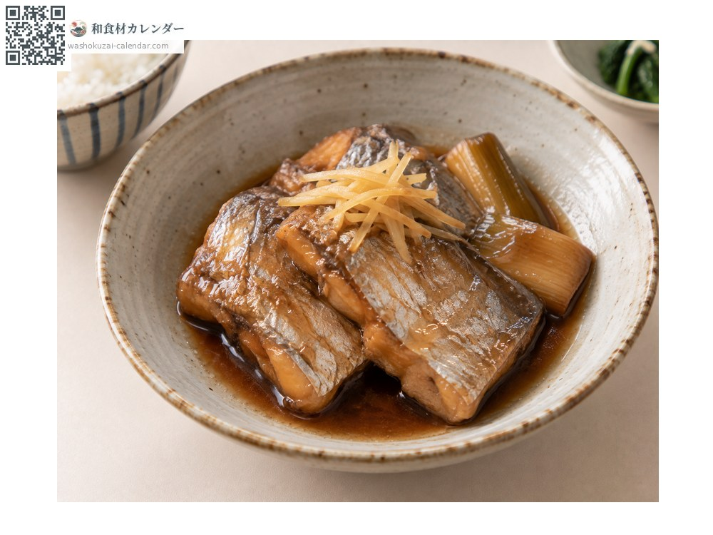

魚介
タチウオ
たちうお
別名・別表記太刀魚、tachiuo
旬は7月・8月・9月

旬の時期
1月
2月
3月
4月
5月
6月
7月
8月
9月
10月
11月
12月
旬出回り
調理法

塩焼き
皮目を香ばしく。シンプルが一番。

刺身
鮮度が良ければ。皮ごと炙っても。

天ぷら
身がふっくら仕上がる。

煮付け
甘辛く煮て。
選び方
銀色の皮が剥がれておらず、光沢があるもの。体に幅があるほど脂がのる。
保存方法
銀の皮が剥がれやすいので優しく扱う。冷蔵で1〜2日。
主な産地
豆知識
銀色の皮はグアニンという物質で、かつては模造真珠の材料に使われた。